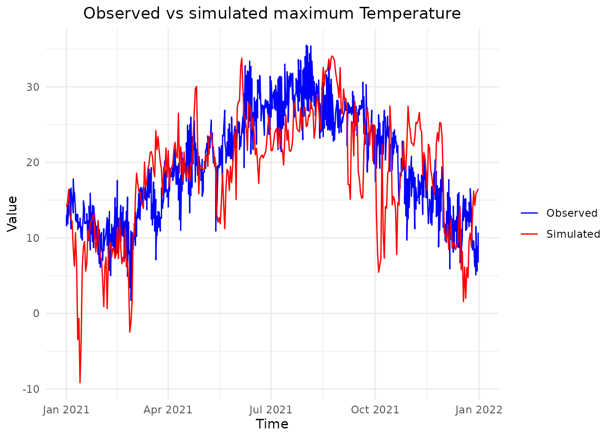
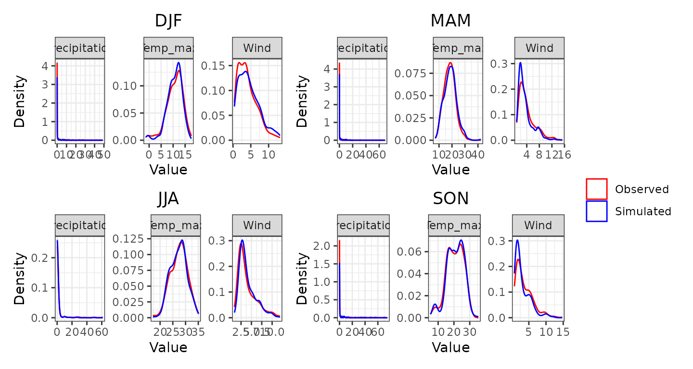
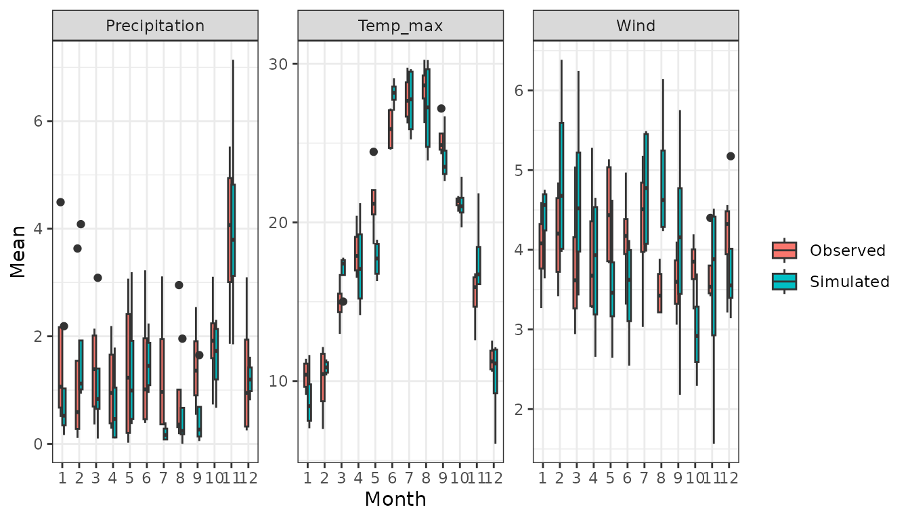
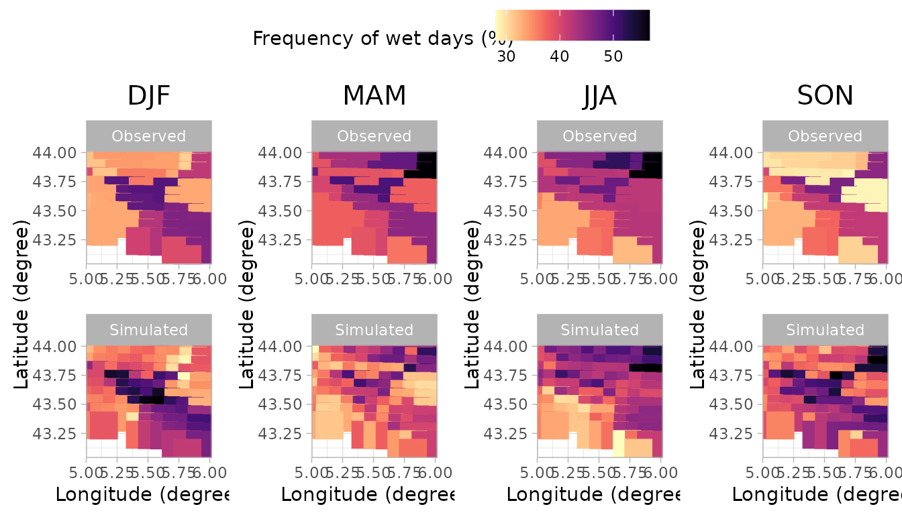
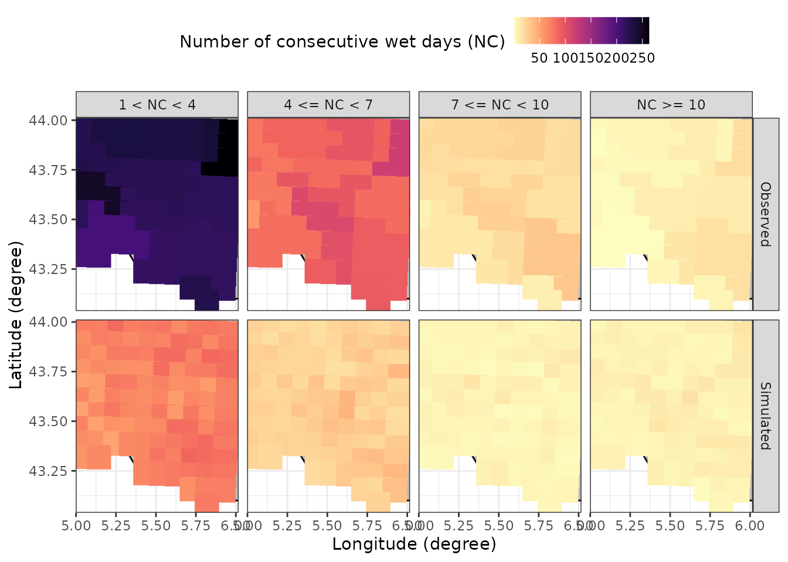

This vignette provides a step-by-step guide on running a stochastic
weather generator using the MSTWeatherGen package. From
loading the historical weather data and spatial coordinates, performing
parameter estimation, to running simulations and generating validation
plots. This guide covers all you need to get started with
MSTWeatherGen, but does not provide the technical details
of the methods considered.
For our simulation, we will need historical weather data of multiple variables and geographic coordinates. Below, we load these datasets stored within the package.
The data considered here is the meteorological dataset SAFRAN, developed by Météo-France. We only consider a small region in the south of France for the period 2017-2021. We consider 3 variables: precipitation, wind, and maximum temperature.
MSTWeatherGen
MSTWeatherGen is designed for multivariate and
spatio-temporal weather generation. Therefore, the meteorological data
to be used (here data) needs to be multiple variables (at
least two variables) defined in a spatial domain (characterized by
coordinates) and a temporal domain (defined by
dates). Thus, the data needs to be in three dimensions
(time\(\times\)location\(\times\)variable). Alongside the
meteorological data, the user needs to provide a two column matrix of
coordinates of each locations considered. Each row i of
this matrix (coordinates[i,]) corresponds to the x and y
coordinates of the datum data[,i,]. Finally, the user needs
also to provide the time (dates here) corresponding to each
point in the first dimension of data.
Another important point about the meteorological data is the
precipitation variable. Being a special variable in the estimation and
simulation (as it has many zeros), if it is considered, it has to be the
first variable in the meteorological data. If the user wants, one can
also provide the names of the variables considered (here
names).
With the data loaded, we proceed to estimate the parameters required
for simulation. This involves determining weather types, computing
transition probabilities between weather types, estimating the
transformation functions of the variables into normal distribution, and
finally estimating the parameters of the multivariate spatio-temporal
covariance function, all using the MSTWeatherGen_Estim
function.
Before heading to the estimation, we will detail some important
considerations that will help the user use the
MSTWeatherGen_Estim function. First, if the data exhibit
seasonality, it has to be handled somehow. Here, propose to treat each
season separately meaning that the parameters of the model (weather
types, transformation functions, and covariance function) are estimated
at each season. The seasons are up to the user to define using the
following format:
seasons <- list(
s1 = list(min_day = 1, max_day = 29, min_month = 12, max_month = 2),
s2 = list(min_day = 1, max_day = 31, min_month = 3, max_month = 5),
s3 = list(min_day = 1, max_day = 31, min_month = 6, max_month = 8),
s4 = list(min_day = 1, max_day = 30, min_month = 9, max_month = 11)
)We can also provide the names of each season, to be used later for the validation plots:
names_seasons = c("DJF", "MAM", "JJA", "SON")If the considered data does not exhibit seasonality one can use the
whole period to estimate the parameters. To do that, one needs to fix
the argument by_season of the
MSTWeatherGen_Estim as False.
All the data being ready, we can now proceed to the estimation of the
parameters using MSTWeatherGen_Estim function.
names_weather_types = names
swg = MSTWeatherGen_Estim(data = data, seasons = seasons,dates = dates, names = names, by_season = T, scale = T,
precipitation = T,names_weather_types = names_weather_types,
coordinates= coordinates, max_it=100, tmax=1, n1=3, n2=3)
#> ---Final iteration--- 27
#> --Singular Value-- 2164.916 -- Local Percent -- 70.26529 %
#> ---Final iteration--- 34
#> --Singular Value-- 412.6398 -- Local Percent -- 45.76965 %
#> ---Final iteration--- 1
#> --Singular Value-- 144.612 -- Local Percent -- 56.13031 %
#>
#> -----Execution Time----- 3.337
#> ---Final iteration--- 18
#> --Singular Value-- 3707.34 -- Local Percent -- 88.08402 %
#> ---Final iteration--- 200
#> --Singular Value-- 340.7072 -- Local Percent -- 31.63652 %
#> ---Final iteration--- 2
#> --Singular Value-- 134.1718 -- Local Percent -- 54.84311 %
#>
#> -----Execution Time----- 4.079
#> ---Final iteration--- 11
#> --Singular Value-- 5483.954 -- Local Percent -- 96.26283 %
#> ---Final iteration--- 78
#> --Singular Value-- 292.2767 -- Local Percent -- 27.07342 %
#> ---Final iteration--- 1
#> --Singular Value-- 123.0181 -- Local Percent -- 62.33143 %
#>
#>
#> ++ Last 3-modes vs < 0.1 % stopping this level and under ++
#>
#> -----Execution Time----- 3.154
#> ---Final iteration--- 24
#> --Singular Value-- 4145.774 -- Local Percent -- 79.19412 %
#> ---Final iteration--- 33
#> --Singular Value-- 688.2143 -- Local Percent -- 46.32351 %
#> ---Final iteration--- 2
#> --Singular Value-- 123.6572 -- Local Percent -- 51.18269 %
#>
#>
#> ++ Last 3-modes vs < 0.1 % stopping this level and under ++
#>
#> -----Execution Time----- 3.069Along the important arguments already defined (data,
seasons, by_season, dates,
names, coordinates), the user needs to define
other arguments related to the estimation such as max_it
which is the maximum iteration used by the optim function
for the estimation of the covariance parameters, tmax which
is the maximum time lag considered in the covariance estimation, and
n1 and n2 which are related to the selection
of the spatial pairs in the covariance estimation. Finally, the user
needs to specify if the precipitation variable is considered using the
precipitation argument. The
names_weather_types is optional and it provides the names
of the variables to be used for the weather types determination. If not
provided, all the variables are used.
Now that the estimation is done, which may take some time depending
on the size of the data, we can use the estimated parameters (stored in
swg object) for the simulation.
Now, we’re ready to simulate weather data based on the estimated
parameters. The simulation method used by MSTWeatherGen is
based on the vector autoregressive (AR) model whose coefficients
matrices can be calculated using the covariance parameters estimated
using MSTWeatherGen_Estim function. Therefore, before
running the simulation, the user needs to define the lag of the AR model
AR_lag and then calculate the coefficient matrices using
calculate_AR_coefficients_matrices. Note that choosing a
higher value of AR_lag can be computationally challenging
both in term of calculation and storage. Therefore, the choice of this
parameters depends of the size of the spatial domain and the number of
variables considered. Here we choose an AR of order 2 and fix
AR_lag as 2.
AR_lag = 1
bk = calculate_AR_coefficients_matrices(parm = swg, coordinates = coordinates, AR_lag = AR_lag)After calculating the AR coefficient matrices, we can now ran the
simulation using MSTWeatherGen_Sim function.
sim = MSTWeatherGen_Sim(dates_sim = dates, dates_original = dates,
data = data, seasons = seasons, parm = swg, AR_lag = AR_lag, bk = bk)The object sim contains the simulated data in a 3D
(time\(\times\)location\(\times\)variable) format (such as
data) for the dates_sim dates.
Finally, to validate our simulation, we can compare the simulated data against our historical data. Here are some plots that help in assessing the accuracy and quality of the simulation.
We first choose a location to use for validation.
Marseille <- which.min(apply(coordinates, 1, function(point) {
sqrt(sum((point - c(5.37, 43.2965))^2))
}))We can compare observed and simulated maximum temperature
library(ggplot2)
dates_to_plot <- seq(as.Date("2021-01-01"),as.Date("2021-12-31"), by="day")
df <- data.frame(
Time = dates[dates %in% dates_to_plot],
Observed = data[dates %in% dates_to_plot,Marseille ,"Temp_max"],
Simulated = sim[dates %in% dates_to_plot,Marseille , "Temp_max"]
)
df_long <- data.frame(
Time = rep(df$Time, 2),
Type = rep(c("Observed", "Simulated"), each = nrow(df)),
Value = c(df$Observed, df$Simulated)
)
ggplot2::ggplot(df_long, ggplot2::aes(x = Time, y = Value, color = Type)) +
ggplot2::geom_line() +
ggplot2::theme_minimal() +
ggplot2::labs(title = "Observed vs simulated maximum Temperature",
x = "Time",
y = "Value",
color = "Type") + ggplot2::theme(plot.title = ggplot2::element_text(hjust = 0.5)) +
ggplot2::scale_color_manual("",values = c("Observed" = "blue", "Simulated" = "red")) 
We now plot the observed empirical density versus simulated weather
variables in Marseille during the seasons considered (winter (DJF),
spring (MAM), summer (JJA), and fall (SON)) using
plot_observed_vs_simulated_densityfunction
plot_observed_vs_simulated_density(sim = sim, observed = data, dates = dates,
seasons = seasons, location = Marseille , names = names, names_seasons =names_seasons)
Next, we can compare the observed and simulated monthly variable
means in Marseille using plot_mean_by_month function
plot_mean_by_month(sim = sim, observed = data,places = Marseille , names_places = "Marseille ", names = names, dates = dates)
Then, we can compare simulated and observed frequency of wet days in the considered area during the considered seasons
plot_wet_frequency(sim, data, dates, seasons, coordinates, names_seasons)
Finally, we can see if our stochastic weather generator can reproduce
the observed length of wet spells in the considered region using the
plot_dry_wet_spells_maps function
library(lubridate)
id = lubridate::year(dates) %in% 2016:2021
plot_dry_wet_spells_maps(sim = sim[id,,], observed = data[id,,], coordinates = coordinates, dates = dates[id])